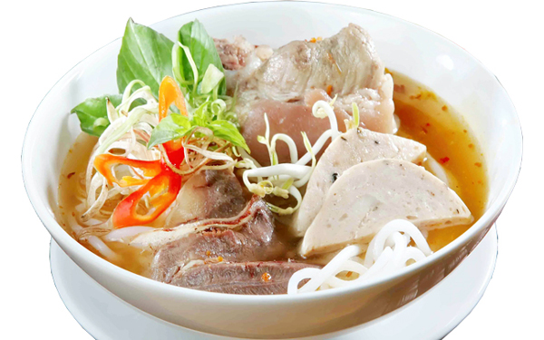

bún

bún là loại thực phẩm dạng sợi tròn, trắng mềm, được làm từ tinh bột gạo tẻ, tạo sợi qua khuôn và được luộc chín trong nước sôi. Là một nguyên liệu, thành phần chủ yếu để chế biến nhiều món ăn mà tên món ăn thường có chữ bún ở đầu (như bún cá, bún mọc, bún chả, bún thang, v.v.), bún là một trong những loại thực phẩm phổ biến nhất trong cả nước, chỉ xếp sau các món ăn dạng cơm, phở.